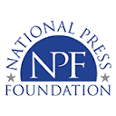

C
Climate Change Media Partnership Fellow, COP30
Earth Journalism Network & the Stanley Center for Peace and Security · Belém, Brazil
Fellowships, training & awards
From climate journalism at Oxford and a COP30 fellowship in the Amazon to investigative honours at home, the programmes and prizes that sharpened the work.

Earth Journalism Network & the Stanley Center for Peace and Security · Belém, Brazil
International Trade Training for Journalists
Member · Reuters Institute for the Study of Journalism, University of Oxford
Internews
Centre for Investigative Journalism & DataLEADS
ICIMOD and academic partners
Awarded in 2023 for “Sold in Cambodia: How Bangladeshis are lured into slavery.”
“Sold in Cambodia” recognised as one of Bangladesh's top investigative stories of 2022.
Get in touch
Open to freelance commissions, collaboration on cross-border investigations, and speaking on migration, climate, and the Bangladeshi press.
Working on something sensitive? Email first and we can arrange an encrypted channel before you share anything.